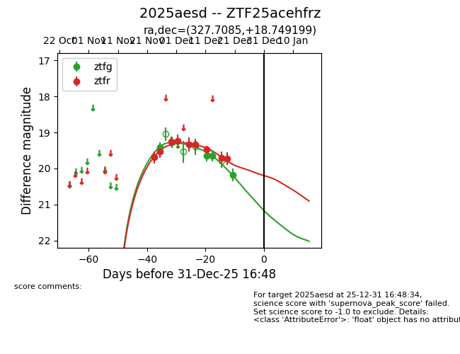
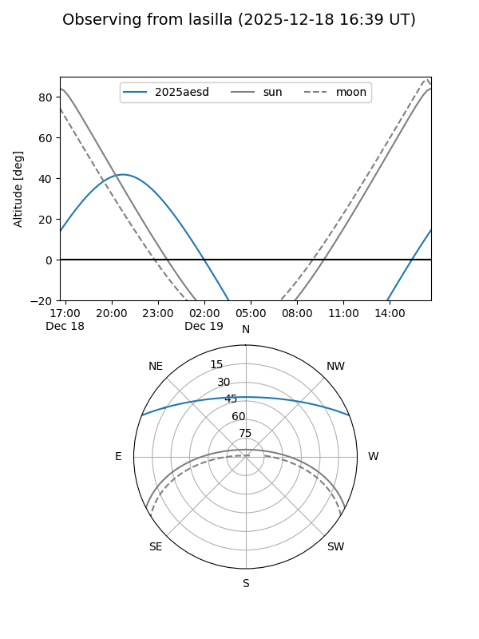
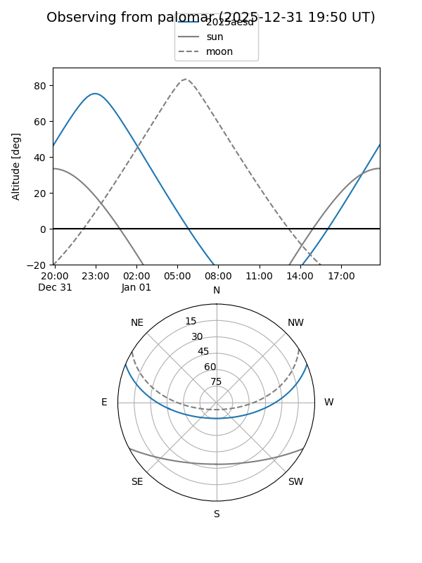
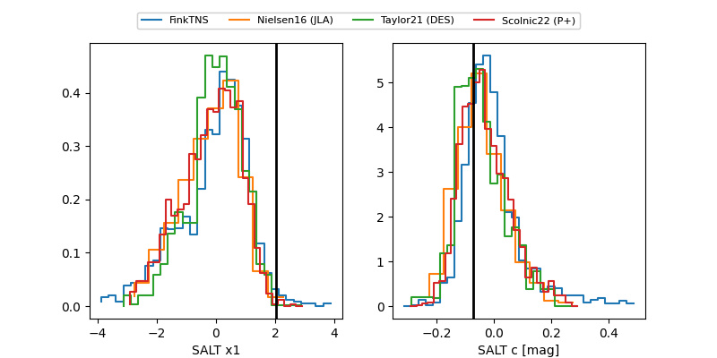

2025aesd
Target 2025aesd at 2025-12-19 15:37
Aliases and brokers:
FINK: fink-portal.org/ZTF25acehfrz
Lasair: lasair-ztf.lsst.ac.uk/objects/ZTF25acehfrz
ALeRCE: alerce.online/object/ZTF25acehfrz
TNS: wis-tns.org/object/2025aesd
YSE: ziggy.ucolick.org/yse/transient_detail/2025aesd
alt names
ZTF25acehfrz (ztf,fink_ztf)
2025aesd (tns,yse)
Coordinates:
equatorial (ra, dec) = 327.7085,+18.74920
equatorial (HMS+DMS) = 21:50:50.03,+18:44:57.12
galactic (l, b) = (74.2698,-26.60157)
Flags:
Photometry:
last ztfg=19.65, ztfr=19.72
4 ztfg, 9 ztfr detections
Lightcurve

Visibility


Additional plots
